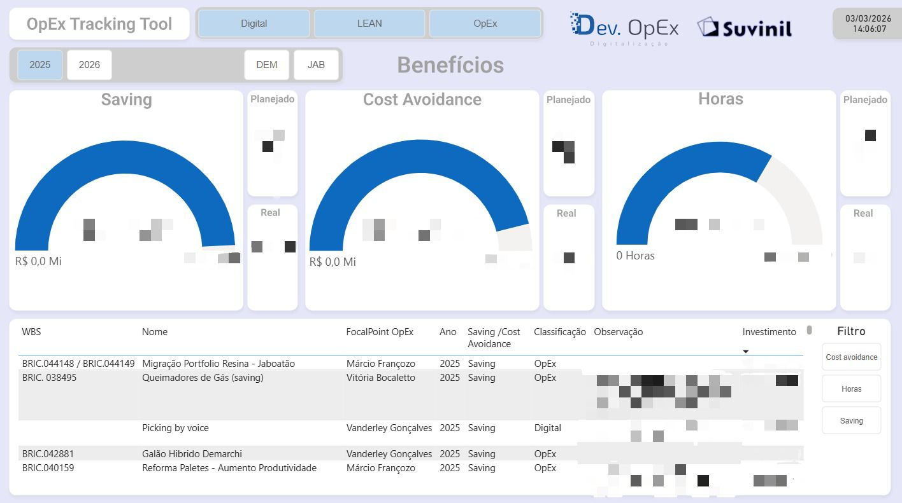
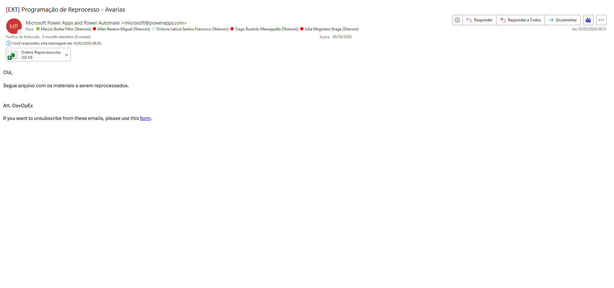
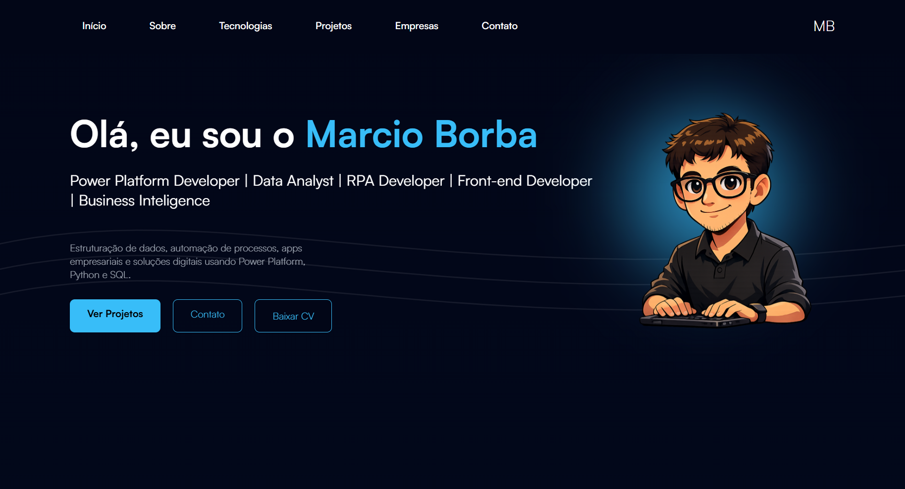
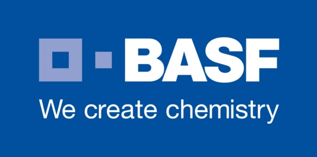

Tecnologias


Estruturação de dados, automação de processos, apps empresariais e soluções digitais usando Power Platform, Python e SQL.
Me chamo Marcio Borba Filho, nasci em 04/05/2005, curso Ciência da Computação na Universidade São Judas Tadeu.
Sou desenvolvedor focado em automação de processos e criação de soluções digitais, utilizando tecnologias como Power Platform, Python e SQL.
Possuo experiência no desenvolvimento de aplicações corporativas, integração de sistemas e construção de dashboards voltados à análise de dados e suporte à tomada de decisão.
Meu objetivo é desenvolver soluções que aumentem a produtividade, otimizem processos e gerem valor real para as empresas.
Atualmente busco oportunidades para aplicar tecnologia na resolução de problemas reais de negócio, unindo desenvolvimento, dados e automação.
São Bernardo do Campo
São Paulo
Brasil
Vendas (1 ano)
Excelência Operacional (1 ano 4 meses)
Melhoria Contínua (8 meses)
Power Platform
Data Analysis
RPA

Dashboard financeiro gerencial desenvolvido em Power BI para tracking e centralização dos benefícios gerados por projetos, com informações inseridas diretamente pelos PMOs responsáveis. A solução permite o acompanhamento de metas trimestrais (targets) e fornece insights para suporte à tomada de decisão. Também atua como ferramenta de gestão e controle do CapEx investido

Aplicação desenvolvida em Power Apps com integração ao SQL que centraliza os projetos da área de Digital, facilitando a reutilização de soluções e acelerando rollouts futuros. A plataforma consolida informações detalhadas dos projetos, com dados inseridos pelos PMOs ou extraídos via Pipefy.

Aplicativo desenvolvido em Power Apps para centralizar informações e processos do setor de RH da Suvinil, facilitando o acesso e a gestão de dados relevantes para colaboradores e gestores. A solução organiza dados relevantes para colaboradores e gestores, facilitando consultas e atualizações. O projeto teve papel estratégico no contexto de M&A, contribuindo para a padronização e disponibilidade das informações.

RPA desenvolvido para otimizar o processo de reaproveitamento de materiais retornados por clientes devido a avarias em embalagens. A iniciativa estruturou o fluxo de reprocesso, ampliando o controle operacional e o aproveitamento de materiais, além de gerar ganhos expressivos de eficiência e redução de desperdícios.

Este portfólio foi desenvolvido integralmente com HTML, CSS e JavaScript, com foco em uma experiência visual moderna e organizada para apresentar meus principais projetos, experiências e aprendizados profissionais.
Vendas

Excelência Operacional

Continuous Improvement